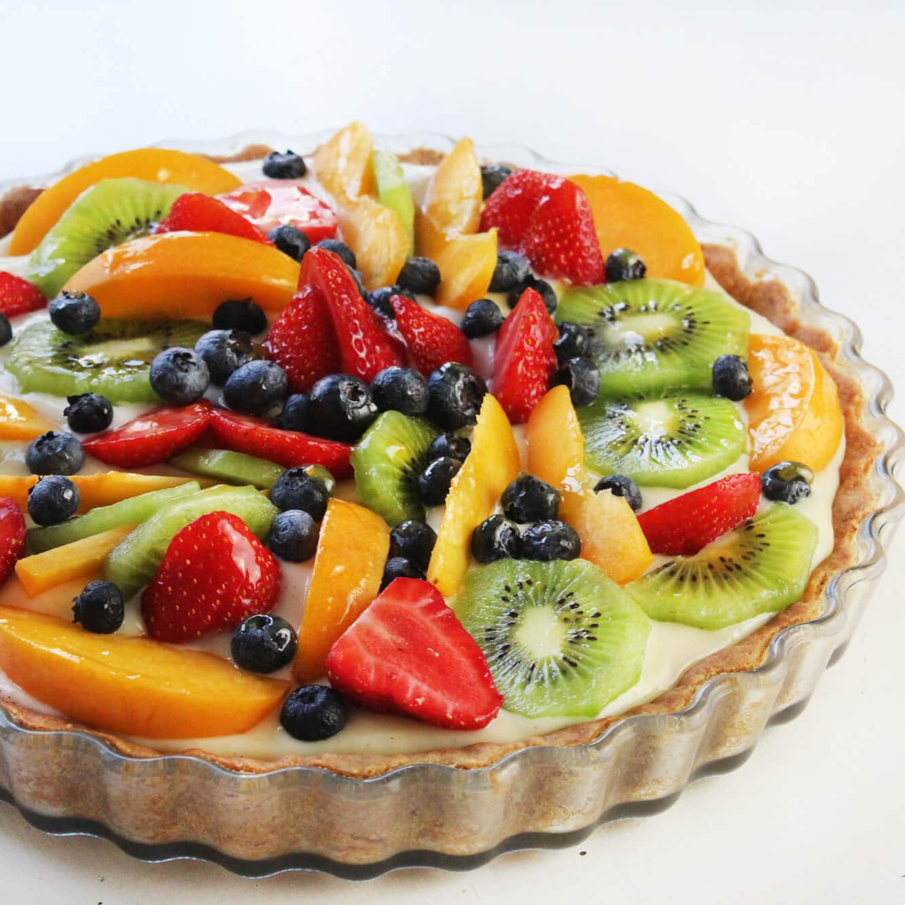

Delicias con Frutas

Las frutas le dan color, frescura y dulzura natural a los postres. Una tarta de frutas combina una base crocante, una crema suave y encima frutas frescas cortadas.
Frutas que más usamos
- Frutillas
- Kiwi
- Arándanos
- Durazno
Consejo
Para que las frutas brillen y no se sequen, se pintan con un poco de gelatina o mermelada tibia apenas se arma la tarta.